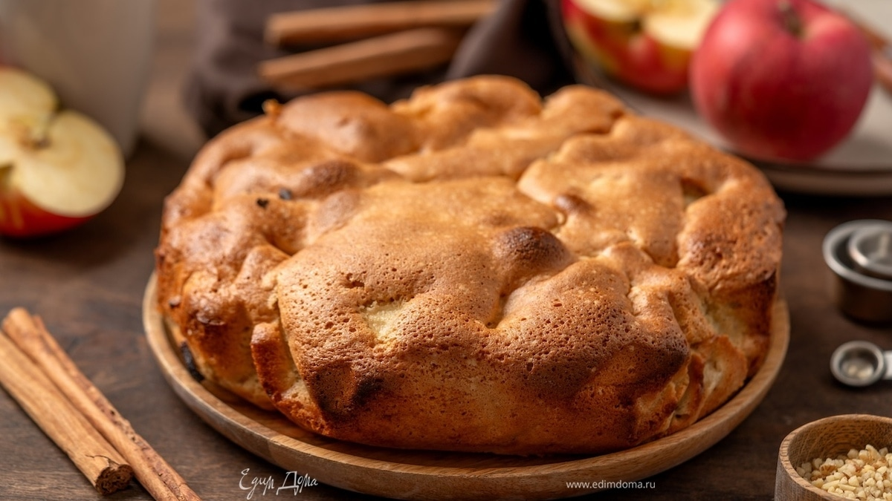

Шарлотка

Описание
Классическая шарлотка с яблоками — пирог очень простой в приготовлении, но при этом вкусный, потому невероятно популярный. Печь его лучше осенью, так как именно местные сезонные фрукты зимних сортов идеально подходят для начинки. Почему они? Потому что такие яблоки обладают ярким вкусом с приятной кислинкой и насыщенным ароматом, которых зачастую очень не хватает «круглогодичным» плодам из супермаркетов. В общем, упустить счастливую возможность получить максимальные вкусовые впечатления от классической шарлотки нельзя ни в коем случае. Приготовьте этот пирог по нашему рецепту и скорее зовите близких к столу!
Ингредиенты
- Мука
- Сахар
- Яйца
- Яблоки
- Ванилин
Шаги
- Готовим тесто классической шарлотки. В чашу миксера вбиваем яйца. Добавляем сахар. Взбиваем миксером сначала на средней, затем на высокой скорости до получения светло-желтой массы однородной консистенции.
- В сладкую яичную смесь добавляем муку, предварительно просеянную через мелкое сито со щепоткой соды и ванилином (ванильным сахаром). Снова взбиваем миксером. Тесто шарлотки готово.
- Готовим начинку для шарлотки. Яблоки моем и каждое разрезаем пополам. Удаляем сердцевины с семенами. Мякоть очищаем и нарезаем небольшими кубиками или ломтиками произвольной формы.
- Яблоки добавляем в тесто шарлотки и осторожно перемешиваем. Выливаем получившуюся массу в форму, смазанную любым жиром, и отправляем в духовку, нагретую до 190°C, на 30 минут.
Home